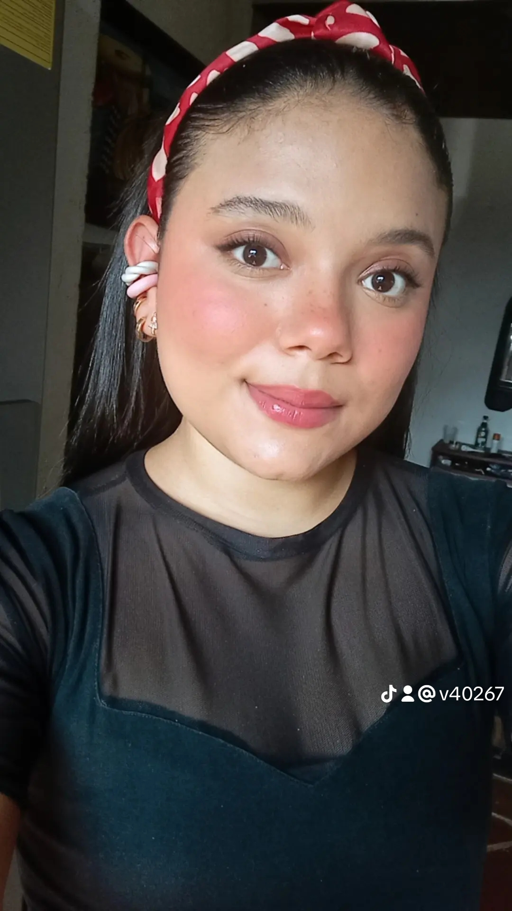

Hola, soy Mariana Vélez
Desarrolladora de Software con pasión por crear soluciones innovadoras y funcionales. ¡Bienvenido a mi portafolio!
Mis Proyectos Recientes
Hojas de vida
Proyecto realizado en python para la visualizacion y automatizacion de precesos empresariales a nivel de gestion.
Ver ProyectoGestion universitaria
Proyecto realizado en python de gestion universitaria para area administrativa.
Ver Proyecto